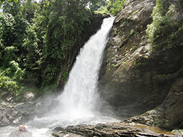
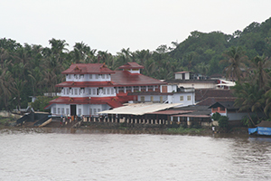

|
|
Kerala regionally referred to as Keralam, is a state in the south-west region of India on the Malabar coast. It was formed on 1 November 1956 as per the States Reorganisation Act by combining various Malayalam-speaking regions. Spread over 38,863 km2 (15,005 sq mi) it is bordered by Karnataka to the north and north east, Tamil Nadu to the east and south, and theLakshadweep Sea to the west. With 33,387,677 inhabitants as per the 2011 census, Kerala is the twelfth largest state by population and is divided into 14 districts with the state capital being Thiruvananthapuram. Malayalam is the most widely spoken and official language of the state. The region was a prominent spice exporter from 3000 BCE to 3rd century. The Chera Dynasty was the first powerful kingdom based in Kerala, though it frequently struggled against attacks from the neighbouring Cholas and Pandyas. During the Chera period, Kerala remained an international spice trading center. Later, in the 15th century, the lucrative spice trade attracted Portuguese traders to Kerala, and eventually paved the way for the European colonisation of India. After independence,Travancore and Cochin joined the Republic of India and Travancore-Cochin was given the status of a state. Later, the state was formed in 1956 by merging the Malabar district, Travancore-Cochin (excluding four southern taluks), and the taluk of Kasargod,South Kanara. |